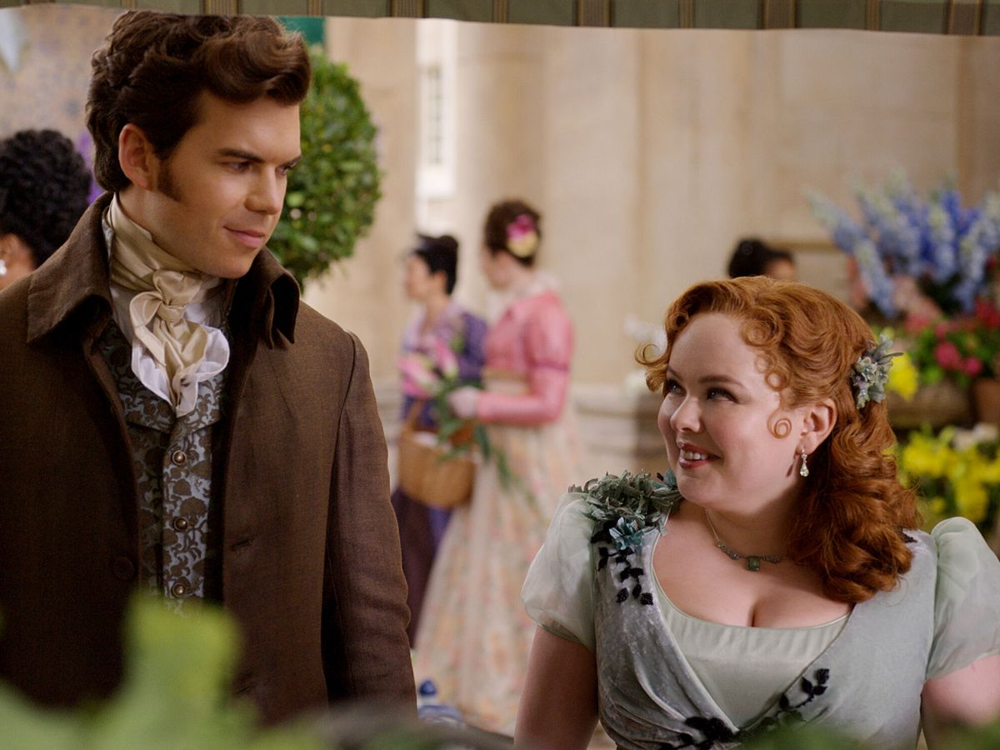

Penelope Featherington y Colin Bridgerton. Después de años de amistad, Penelope ha decidido dejar de esperar a Colin y buscar marido, mientras intenta mantener en secreto su identidad como la misteriosa escritora Lady Whistledown. Por su parte, Colin regresa de sus viajes con una nueva confianza y decide ayudar a Penelope a encontrar pretendiente, sin darse cuenta de que poco a poco comienza a verla de una forma diferente. ¿Se dará cuenta de que el amor siempre estuvo frente a él?
A lo largo de la temporada, la cercanía entre Colin y Penelope crece mientras él la ayuda a desenvolverse en la sociedad. Los momentos de complicidad, las conversaciones sinceras y un inesperado beso hacen que ambos empiecen a cuestionar sus sentimientos. Poco a poco, la amistad que los ha unido durante años se transforma en algo mucho más profundo.
El gran conflicto de la temporada surge cuando la identidad secreta de Penelope como Lady Whistledown amenaza con arruinar su relación con Colin y su reputación en la alta sociedad. Él deberá decidir si puede aceptar toda la verdad sobre ella y si su amor es más fuerte que los secretos y escándalos que los rodean.
Colin finalmente comprende lo que siente por Penelope y decide luchar por ella, demostrando que su historia no se basa solo en pasión, sino en años de amistad, confianza y crecimiento juntos. 💌